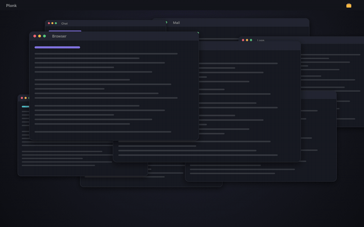
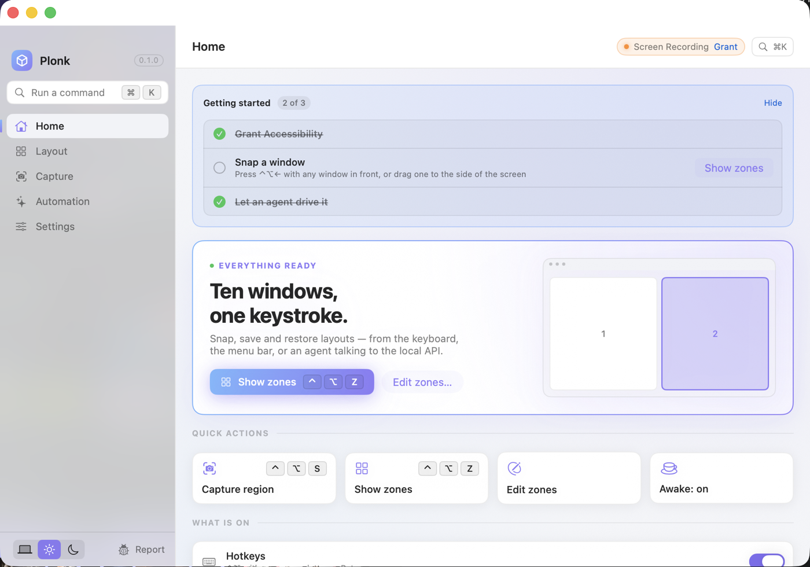
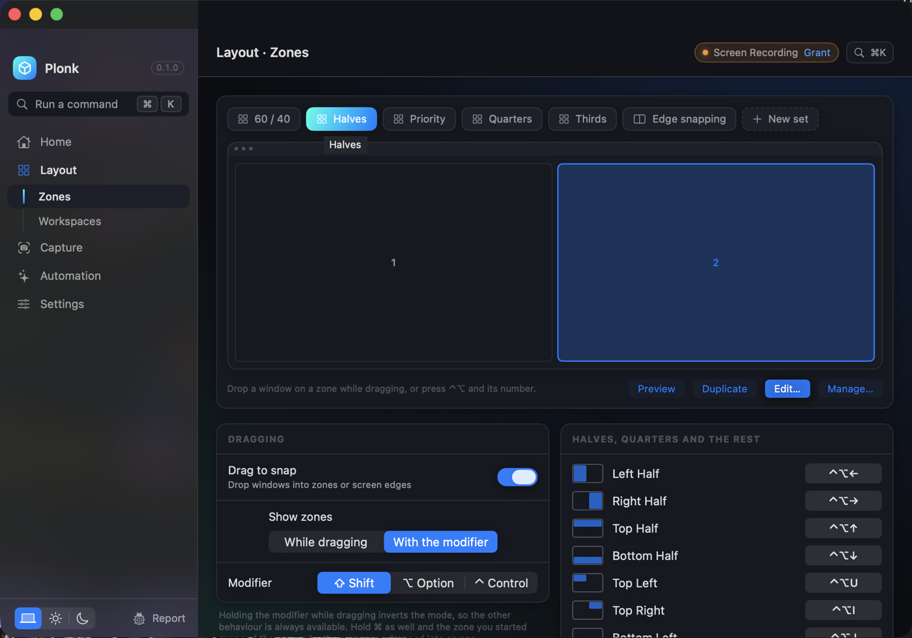
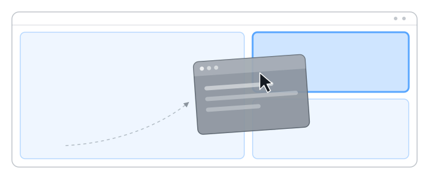
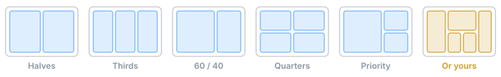
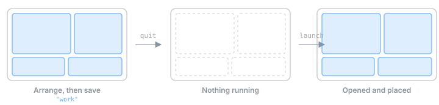

One menu bar app doing what ten usually do: a window manager with zones you draw yourself and workspaces that reopen your apps on the right monitor, plus text lifted off the screen, keep-awake, screenshots you can draw on, pointer tools and a shortcut guide. Drag a window there, press a key — or describe the whole desk and let your agent build it.
brew install --cask ostapondo/plonk/plonk
Signed, built and attested on GitHub's runners — check the binary against the commit before you open it.

Halves and quarters your Mac already does. The point of Plonk is the layout that isn't halves and quarters — and getting eight windows into it without eight drags.
Zones light up as you move a window, and it drops into one. Hold ⌘ and it takes two of them at once. Grab-and-move lets you pull a window from anywhere inside it.
⌃⌥← for the left half, ⌃⌥1–⌃⌥9 for the numbered zones on that screen, ⌃⌥0 to put a window back exactly where it was before Plonk touched it.
Plonk speaks MCP, so any agent can place every window on every monitor in one call — and save the result as a workspace you can launch from nothing.
Five places to be, not eleven. Anything the app can do has a name you can type, and the theme it is drawn in is yours to pick — the zone overlay and the HUD follow it.


Every zone, every workspace, every setting page, every shortcut — by name. The same list of verbs an agent gets over MCP, with a search field in front of it.
Pick a theme and an accent in Settings · Appearance. The window, the drag overlay and the heads-up display all take it; leave it on System and macOS decides.
Shortcuts are printed on the row that owns them. Permissions only take space on the day one of them is missing.
Click a zone to split it, ⇧-click to split it the other way, drag a divider to resize its neighbours. Any number of zones, any size, a different set on every monitor — and windows come back to their zone when a display is unplugged and plugged in again.

Five sets ship with it. Everything past that you draw yourself — or describe, and let the agent build it.

A workspace remembers the apps, the frame of every window, the monitor each one belongs on, and what each app should open on the way up. Launch it onto an empty desktop and it rebuilds itself — opening whatever is closed, waiting for the windows, putting them back.

One line, and your agent can read the desk, rearrange it, save it, and read the screen back — without a screenshot round trip for anything that is really just words.
# Claude Code claude mcp add plonk -- npx -y plonk-mcp # Codex CLI codex mcp add plonk -- npx -y plonk-mcp
Cursor, Zed, Cline and anything else that speaks MCP work the same way — several at once is fine, and Plonk shows you who is connected. All 19 tools →
| Zones | Draw any layout you like, per monitor. Snap by dragging, by number, or by asking. Windows come back to their zone when a display is unplugged and plugged in again. |
| Workspaces | A desk you can put away: the apps, every window's frame, the monitor each belongs on, and what each app opens on the way up. Launch it onto an empty desktop and it rebuilds itself. |
| Focus that follows the layout | ⌃⌥⇧← goes to the window that is actually on the left, not the one you used last. ⌃⌥` cycles the windows stacked in one zone. |
| Text off the screen | ⌃⌥T selects an area and copies the words in it — from a screenshot, a paused video, a dialog that will not let you select. On-device, nothing uploaded. |
| Pin part of the screen | Float a live crop of anything above everything else: a build log, a chart, a call, visible in a corner while you work over it. |
| Keep awake | Real power assertions, not a jiggler — and a session that ends by itself: after N minutes, at a wall-clock time, or the moment a process exits. |
| Screenshots | Region, window or screen, then pen, arrow, rectangle, ellipse and highlighter. Saved at native resolution. |
| A shortcut guide | Every shortcut the app in front actually has, read from its own menus, so it is never out of date. |
| Pointer tools | Find the cursor, ring every click for a screen recording, crosshairs, jump to the next display. |
| Voice | Hold ⌃⌥V and say it. The common ones — “snap this left”, “zone three”, “keep awake for an hour” — run in the app itself, offline and instantly; anything bigger goes to your agent. Recognition is on-device. |
Moving another app's windows costs an Accessibility grant, and a screenshot costs Screen Recording. That is a lot to hand something you installed a minute ago — so none of this is a promise, it is all checkable from a terminal.
# every socket the app has open
lsof -nP -i -a -p "$(pgrep -f Plonk)"
plonk … TCP 127.0.0.1:43917 (LISTEN)
One listener on loopback. The only outbound call is the update check, which sends no identifier and can be switched off.
# a web page cannot drive it curl -so /dev/null -w '%{http_code}\n' \ -H 'Origin: https://example.com' \ http://127.0.0.1:43917/state 403 # and nor can another program on your Mac curl -so /dev/null -w '%{http_code}\n' \ http://127.0.0.1:43917/state 401
The API is gated on a token only you can read, so a script cannot borrow Plonk's Screen Recording by asking the port. No account, no cloud, no analytics, no crash reporter. SECURITY.md →
brew install --cask ostapondo/plonk/plonk
Or help build it. It compiles and tests on a plain checkout with no signing certificate and no account — CONTRIBUTING.md is three commands long, and the good first issues each say where the code is and how to tell it worked.